2006-05-07T00:00:00 (Sun)
旅から帰還

5/2から5/6まで旅行してました．昨日帰ってきてから今日の朝まで16時間寝てました orz
12時間超えた睡眠は結構久しぶりでしたね(ノ∀｀)
さて，遠征レポート書こうか．
（ちなみに写真は5/2の出発前に学校で撮ったもの．荷物一式です．）
5/2から5/6まで旅行してました．昨日帰ってきてから今日の朝まで16時間寝てました orz
12時間超えた睡眠は結構久しぶりでしたね(ノ∀｀)
さて，遠征レポート書こうか．
（ちなみに写真は5/2の出発前に学校で撮ったもの．荷物一式です．）
間違いなく来週くらいまでずれ込みます．
連休前に出された学校の課題が鬼のようで，提出まで後2日と迫った現状ではとても遠征レポなんて書いていられません．
アイマスが撤去されるとあって，ここ最近は学校，事務所，バイト先を巡って巡ってする生活をしておりました．お陰で遠征レポートなんぞまったく書けていません．書く気はあるんですが，とにもかくにも時間がない…
ちなみにもちろんお金もありません．そしてとうとうバイト代をこつこつ溜め続けていたイーバンクの口座からお金を1万円ほど下ろしました．10万以上残っていたので郵便局ATMから下ろしても手数料は取られませんでしたが，（※イーバンクはセブン銀行のATM以外だと出金手数料がかかる．ただし郵便局ATMは先々月の預金残高が5万以上あればそれが月3回だけ無料になる．）なんだか自分に負けた気分です… 口座のお金は旅行とかに使う予定で溜めてるのに… ゲーセンのゲームに使うだなんて…
今月のバイト代が出たら，1万3千円にして返すから許せ，俺．
そしてもう8月（夏コミ）まで絶対に本州に渡らないから，安心してバイト代を半分近く口座に放り込め．
大丈夫，マジアカと太鼓の達人をするくらいの金なら残る．
もう4日後にはアイマスは撤去されています（泣）ので，そしたら遠征レポートを書こうと思います．
課題が提出期限ギリギリに片付く → すぐに次の課題が出る
以下，繰り返し．
なんて単純で，そして根源的な罠なんだ…
そして憎むべきはバイトだ．アイマスの撤去だ．
正直今課題が遅れがちになっているのはこの2つのせいｗ 先週も課題が出されたと同時にゲーセン突っ込みました．撤去まで残り3日という状況下ではそうするしかなかったのです．
（ん？ひょっとしてここで私は根源的な間違いをしてる？まぁ，気にシナーイ方面で）
あー，もっと画像に富んだ日記を書いていたい… orz
でも写真の編集に掛かる時間も馬鹿になりません．やっぱり週記しか書けない私マーメイ
明日は課題が出されると同時に居残れる限界まで居残って課題を進めようと思います．
いや，本来はこっちが正しい姿なんだけど… orz
いい加減書かなければ…
もう経緯とかは超簡単に．
とにかく，この旅行は4月の給料を全部ブッコんでアイマス設置店を巡りまくってくる予定でした．そのついでに雛見沢へも行こう，って程度で．
それ以上もクソもありません(ノ∀｀)
だからアイマスの写真がやたらと多いです．分からない人は特に気にしないで下さい．
5/2 出発当日
この日，私とohrinとサモは徳島の地を旅立ち，めいめいで岐阜県と愛知県を目指すことになっていました．
まず，朝8時頃，サモが我が家へ歩いて到着．ヒッチハイクで旅をする予定だったサモを，鳴門の高速入り口までうちの車で乗せていってあげる予定（ちなみにこの予定はこの前日に決まった）だったのです．で，うちのおかんの運転する車に乗り込み，まずは私が大学で下りる．そしてサモをおかんが鳴門の高速まで運ぶ，という計画だったのです．
で，私は普通にサモがどうなったのかを気にしながら，大学で授業を受けていました．
ちなみに，昼休みに荷物一式を撮影しました．次がその写真です．
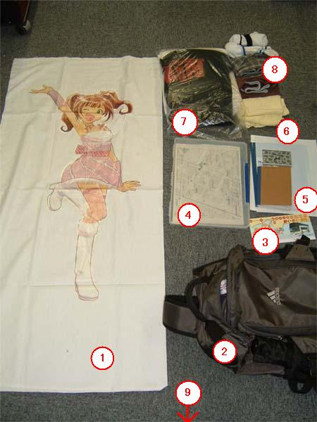
1.自作やよい抱きまくらカバー
2.リュックサック
3.チケット類
4.地図
5.アイマスセット
6.タオル
7.着替え
8.下着，靴下
9.バカ（撮影者）
授業が終わった16:05．友人に教科書を預け，一路徳島駅へ．そしてohrinと合流し，17:40発の，岡山駅行き高速バスに乗り込む．
ちなみにこの日初めてJR高速バスの方に乗りました．いつもは徳島バスばっかり使っていたのです．

まぁ，特に何か大きな差があったというわけじゃありませんがｗ
そしてバスに揺られて3時間ほど，岡山上陸．前回来たことがあったので駅まで道は余裕でした(ノ∀｀) もしこれ，このときが初回だったら絶対地下通路で迷ってたんだろうなｗ
 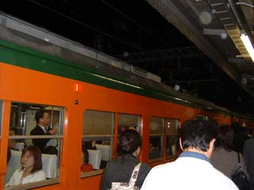
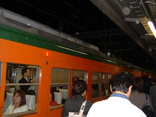
そして倉敷駅まで電車に揺られ，この日の目的であった「弥生駅」へ行くために水島臨海鉄道に．

倉敷市駅で路線を確認．確かに5駅先に「弥生駅」の文字が．

切符を購入．310円… 安いような高いような… それにしても流石は私鉄．駅が限られているだけありますね，切符に目的地の駅名を書けるなんて．JRなんて「XX円区間」ですよ．
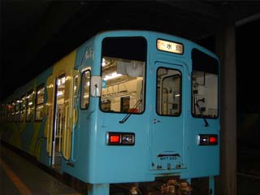
やたらとイラストが施された列車に乗り込み，一路弥生駅へ．
ちなみに水島臨海鉄道はバリバリの非電化路線でした．
激しい起動音と共にゆっくり動き始める気動車！そしてこいつはワンマン列車！
馴染む！馴染むぞッ！やはり気動車は徳島県民に馴染むッ！！
最高に田舎！ってヤツだぁーッ！フハハハハ！！ (つД｀)・゜・。
まぁそういう自虐ネタは置いといて，15分くらい？で弥生駅に到着しました．
…本当はですね，何時何分の列車に乗って，どこで何をした，ってのは事細かにメモっていたんですよ．でもそれは3日目の白川郷から名古屋へ行くバスの中に忘れてきてしまったんです… orz あれがあれば，もっと細かいこといっぱい書けたのですが，まぁそういうわけで乗車時間は15分くらい？という曖昧な内容がこれから続くことになります．鉄道旅行の日記なんてのは，何時何分にどこそこについて何をした，とか，旅行時間における乗車率はこれだけだった，みたいなデータを読むのも楽しみの一つだと思ってたので，残念な限りです… orz いや，これを読んでる人の何‰がそんなことを期待してるのかは知りませんが，まぁ自分としては割と残念ということで(^^;
（もちろん，またその気になれば時刻表とか残された写真の情報などからそれらを調べ上げることは可能です．しかし，そっちの方がめんどくさいと思ったので今回はこのまま行きます．）
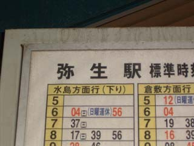
まぁいらん話はさておき，ついに来たぜ！「弥生駅」！！！

うっう〜！コレがやりたかっただけなんです，旅費を無駄遣いしてごめんなさい，プロデューサ〜．
なーに，経費（？）で落としておくよ．だからやよいはお金のことは気にせず仕事をやってくれ(´∀｀)
そんなわけで，弥生駅一発ネタ終了！！
マジでこれだけっすよ！！これだけのために，わざわざ岡山から回っていくルートをとったんですよ！！
兵庫の事務所と白川郷と名古屋と日本橋しか確たる目的地としてはなかったわけですから，明石海峡大橋を通るのが金としても時間としても普通に，お得だったんですよ！！
しかしやよいへの愛ゆえに，こういうことをしてしまう私マーメイッ．
まぁ，これくらいしないと人生楽しめませんって(´∀｀)
てなわけで，その後は何をするでもなく，弥生駅から南へ2kmくらい歩いて栄駅まで行き，その近くの予約していたホテルに泊まってこの日は終わりました．
 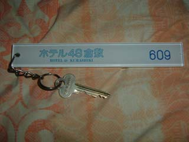
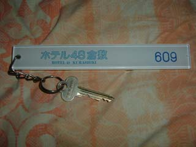
晩ご飯は近くのサンクスで買ったお弁当でした．もう今回は「食費ケチらない旅にして後悔」（福岡遠征記参照），ってのはナシです！
てなわけで旅行日程1日目終了！！遠征記はまだまだ続くよ！
-おまけ-

枕を詰め込みました(´∀｀)
#これがアップされたのは6月4日ですが，5月28日付けで途中放棄されていた（写真のファイル名もそれにあわせてあった）ので，もう日付はそのままアップしました．
#前回の日記で「さすが私鉄，駅名が切符に書かれてるぜ！」と言いましたが，TAKKON氏（大学の友人）より「近鉄の切符はXX円区間だぜｗ」とツッコミを受けました．つまり，かなり短い距離の私鉄だったから，水島臨海鉄道の切符はああだったわけですね．一つ知識が増えました．ありがとう！
旅行日程2日目．岡山から兵庫，大阪と巡って京都のGNAさん宅まで行く予定の日．
この日のメインの目的は兵庫の事務所を全て回ることでした．なので，1店目に開店と同時に突っ込めるくらいの勢いで行こうと思って，朝の7時にはホテルを出る予定でした．
で，朝6時頃起床．前日に買っておいたカップ焼きそばを食し，着替えも完了してあとは荷物をまとめて ohrin を起こして出発するだけ，という段階になって．
奇跡の二度寝 (ノ∀｀)
起きたのはチェックアウトを知らせる電話（10時前）でした．本当にありがとうございました．倉敷を出て，兵庫の1店目に開店と同時に突入というのはもうここでどう見ても無理でした．
嘆いても仕方ないので栄駅から倉敷市駅へ例の水島臨海鉄道で突入．

やよい駅を通過する際にこんなものを撮ったり(ノ∀｀)
そして，倉敷駅からJRに乗りました．
いよいよここから，長距離切符の利用がスタートです．倉敷から岐阜までの，4620円の切符です．乗車区間が200営業kmを超えてるので，3日間利用可能で，学割も適用されています（学割は100営業kmから）．なぜ列車の旅を選んだかというと，今年の夏コミのときに青春18切符を使って乗換えを駆使する超割安旅をするための練習台としたかったからなのです．時刻表を調べて，どの駅で何番線に到着したあと，何分以内に何番線の何処行きの列車に乗り換えて…という情報をキチンと把握する練習を兼ねていたのです．まぁ，それに関しては大いに成功しました．今後の学生生活の18切符の使用可能期間は，これであちこちをブラブラして来たいと思います．
さて，倉敷から岡山へ向かう列車の中で，自分は ohrin にあることを説得していました．
それは，
「僕はこれから兵庫の事務所を巡ること“しか”しないから，きっと付いて来てもおもしろくない，っつーかむしろ疲れるだけだと思うよ．岡山市内とか大阪とかを，単独でブラブラする方がきっといいと思うよ．」
ということです．
そしてこれを聞き入れた ohrin とは，夜に京都駅で落ち合おうということにして岡山駅で別れました．
で，ここから一人で兵庫を巡る旅が始まりました．

事前に設置店 wiki と Google マップで兵庫の設置店を全て調べて，地図もプリントアウトして持ってきていたので，降りる駅や目的のゲーセン周辺の地理は完全に把握していました．なので，あとは体力と根気だけの勝負だなー，と考え，気長に兵庫県を目指すことにしました．
ちなみに，山陽本線をずーっと東へ進んでいたわけですが，何故か岡山から一番最初の下車駅である姫路に行くまでに二度も電車を乗り換えました．
一度目は和気で降ろされて，二度目は相生で降ろされました．なんであんな山の中に二つも終点駅があったのかは未だにまったくもって謎です．
和気では何気に30分くらい待ち時間があったので，下車印もらって駅の外をブラついてきました．
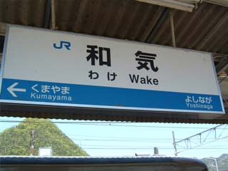 
一時間に1or2本のダイヤ．ここはどこのJR四国ですかｗ

 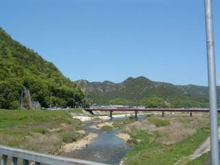
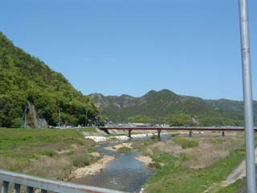
和気駅の外は，なんだか哀愁漂う田舎ムードｗ あんまり賑やかじゃないアーケード街とか，車の通りが極端に少ない綺麗な舗装道路とか．
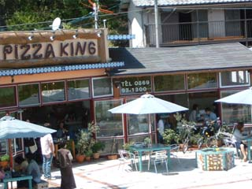 
レストランみたいなものにしても，なんだか盛り上がりに欠ける感じがｗ
田舎っていうのは，田園風景みたいなのじゃなくて，こういうのを言うんだと思います．実に徳島に近い何かがありますｗ
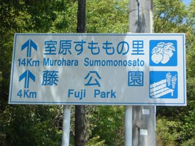
すもも！？とか思いましたが，さすがに14km先には行く気力も時間もありません．
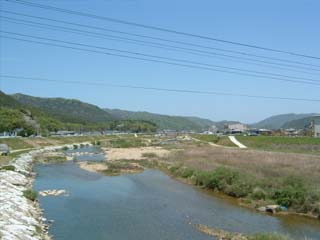
どっちを向いてもこんな景色ばっかり．
都会の人って，こういうの見て和むのかな？ 退屈なだけじゃね？とか思ってしまうのは私が田舎人だから？

駅に帰ってきてから気付いたレンタサイクル．これを使えば，もう500mくらい，駅周辺での活動半径を広げられていたかも．
そんなこんなで13時前に和気駅を出発．今度こそ一気に姫路まで行けるかと思いきや，次もなんだか相生で降ろされるチックな情報を見てしまい軽く orz になっていました．でも相生では乗り換える快速がすぐに来てくれたので待ち時間はほぼ0分でした．
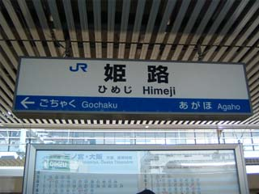 
そして姫路駅到着．多分13:30くらい．どうみても当初の予定から3時間以上遅刻しています，本当にありがとうございました orz
 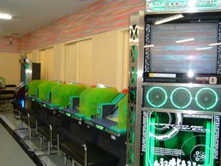
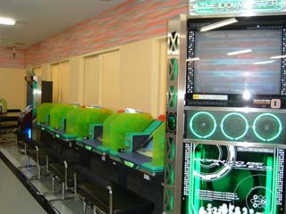
地図を片手に駅前をしばしさまよって，ゲームアイビス姫路店に到着．時間がないので筐体を探して1クレだけやってそそくさと退出してきました．
他に誰もプロデューサーいませんでしたしね(ノ∀｀)
そしてまたしばらく電車に揺られ，加古川駅を目指す．

次の目的地は加古川市にある2店．加古川駅から比較的近い距離にある「ジョイプラザ加古川」というボウリング場と，山陽電鉄なる私鉄の別府駅近くにあるという「楽市楽座加古川店」．まずは前者から攻めることにしました．
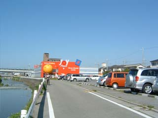 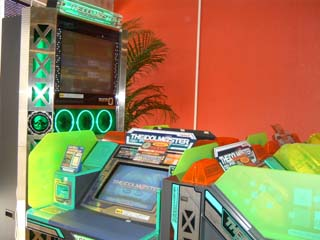
にしても，ボウリング場に付随してる程度のゲーセンにアイマスがあるだなんて… 徳島じゃあ，県内屈指の大型ゲーセンで撤去されてしまったというのに(つД｀)
ほんと羨ましい限りです．本州の皆さん，あなた達はほんとに幸せですよ．その幸せを大事にして下さいね orz


そしてここの更に凄いことといったら，100円の代わりに50円が使える仕様とでも言いましょうか．
要するに2*50円の100円1クレで，250円3クレなのです．50円玉以外は入らないようです．
もうほんと羨ましい限りです．加古川駅周辺に是非住まわせてもらいたいぞゴルァ！ヽ(｀Д´)ノ
で，時間の問題もあったので250円で3クレというおいしい体験はすることなく，普通に100円1クレで1回遊んできました．
で，次のゲーセンに行くために山陽電鉄別府駅を目指すことに．
…が，ここで大誤算が．山陽電鉄の線路が思った以上に遠いのです．とてもじゃないけど歩いていける距離ではありませんでした．本来ならば歩いてどこか加古川駅から一番近い駅に行き，そこから別府駅を目指すはずだったのですが…
ということでバスを使うことに．幸い「別府駅行き」という市内バスがあったのでそれに乗りました．しかもこのバス，市内なら100円or200円でどこでも行けるというお得仕様．200円で別府駅近くのイトーヨーカドー前バス停まで行ってきました．で，駅前周辺を地図片手に探し回ると，発見．

もうほんとこういう“ゲームセンターONLY”な店がいっぱいあって欲しいよ，徳島にも．
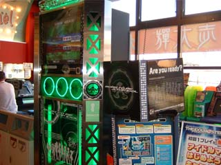 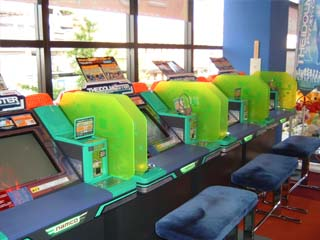
まぁここでも見事にアイマスは過疎ってましたが(ノ∀｀)
やはり同じく1クレだけやってそそくさと退店．うわー，読んでる人には何もおもしろくねぇーｗ
で再び同じバスで加古川駅まで戻り，また電車に揺られて次の目的地を目指しました．ちなみに加古川での時間のロスは非常に大きく，この時点で既に17時くらいになっていました．
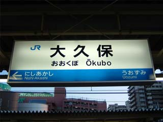
次の降車駅は大久保駅．山手線じゃなくて．
ここでのゲーセンも先ほどと同じく「楽市楽座大久保店」というお店でした．駅から歩いて10分ほどの距離にあるとのことで，国道2号線をテクテクと西に歩き続けます．
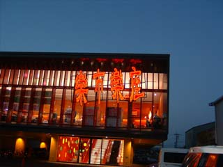
何故か軽く15分くらいかかって(^^; ようやく到着．
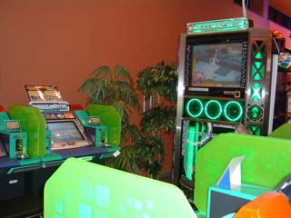 
ちなみに今までの店舗のサテ数は明記してませんでしたが全て4台です．ここも同じ．アイマス専用ヘッドフォンが設置されてました．
やはり同様に1クレだけやって撤退．はい，やっぱりこのゲームは過疎る運命なんですね orz
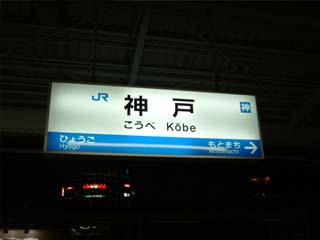
そして20時くらいになろうかと言う頃，やっと神戸に到着．遅い，遅すぎるよ俺… orz
もうこの辺からは半ば意地で事務所巡りしてました．足は疲労でむちゃくちゃ痛かったし，翌日は白川郷を巡って写真撮らなきゃならなかったので，もうやめてもいいかなと，思いはしました．が，同時に「せっかくここまでやったんだから」「あと3店だから」という気持ちもあって，結局兵庫はフルコンプすることになってしまいましたｗ
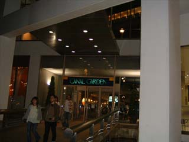
で，神戸駅前の CANAL GARDEN というデパート（？）に向かうことに．ここに第5の目的地である「アーバンスクエア ダイエーハーバーランド店」があったのです．


ちなみに，この店で初めてアイマスをやってる人を見かけましたｗ
話しかけようとしましたが，もう帰るところらしかったのできっかけをつかめず見送ることに (；ω；)ノシ
で，ここでも1クレだけやってきました．もうほんと時間もなかったですし，それにこのゲーセン自体が21時に閉まるようだったので（私がプレイをしている途中で「ほたるのひかり」がもう流れ始めましたｗ）．

そして兵庫最後の2店，「ラウンドワン三ノ宮駅前店」と「遊スペースマジカル」へ行くため三ノ宮駅で降りる．

何故か途中で阿波銀行の支店を見つけたりｗ 兵庫なんぞに設置してどーすんだと(^^;
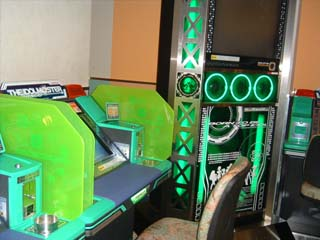
まずはラウンドワンの方へ行くことに．ここでも同じく1クレだけプレイ．サテは4つありました．
ちなみにラウンドワンというだけあって，かなり一般人が目立ちました．それもあるのかどうか知りませんが，やっぱり誰もやってませんでしたｗ
 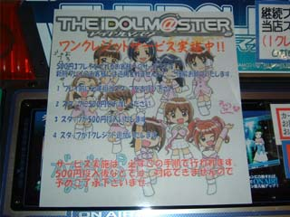
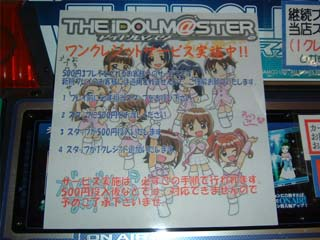
遊スペースマジカルの方．ここもやっぱり誰も（ｒｙ
で，ここも何気に500円6クレのサービスが！是非三ノ宮に住まわせていただきたいぞゴルァ！！(つД｀)・゜・。
でもやっぱり時間がなかったので100円で1クレだけやって終了．
そしてこの瞬間，ようやく 兵庫県の事務所コンプリート！！いぇい！！
丸一日かかりました．ohrinよ，ほんと付いて来なくてよかったよ君は (つД｀)
岡山で半ば無理矢理チックに単独行動をさせた私の判断は結果的に凄く正しかったことになった．よかったよ本当に．
そしてあとは京都へ向かうだけ… という折になって，物凄いツキがやってきました．
京都行きの新快速が間もなく到着だって！？

これのお陰で通常の1.7倍くらい？の速さで京都まで行けました．でも到着したのが23時くらい… orz
GNAよ，引きとめたままにしてほんとごめん．
で，この日はGNA宅でお泊り．そして翌日はあの地獄の雛見沢観光編へと突入するのでした…
（続く）
#GW遠征記はもう5月分に全てまとめることにします．その方がログにしたときも読みやすいだろうし．
旅行日程3日目．京都を始発で出発し岐阜県を目指す，白川郷を観光する日．
この日は開始早々ハプニングが起こっていました（またか）．
我々のプランは京都から岐阜まで東海道本線で行くようになっていました．岐阜駅前から08:30に出る白川郷行きのバスに乗るためです．
そのために京都駅を05:48に出る電車，つまり始発に乗らなければならなかったのです(^^;
しかし， GNA 宅は京都駅から地下鉄で3駅の「くいな橋駅」近く．
この駅からだと，始発に乗っても京都駅に05:48に着くのが無理だったのです．これを事前に調べてなかった私も私ですが…
もうこうなると選択肢は一つ．
タクシーを呼んで京都駅まで乗せていってもらう！
…なんて我々がするわけないです．
そう，もちろん，
京都駅まで歩いて行く！！
てなわけで念のためということで朝4時頃にGNA宅を出発する我々．なんで念のためかって，当の GNA 本人もそこから歩いて京都駅までは行ったことがなかったからｗ 割と危険な賭けでした．もし方向を間違えれば05:48以前に京都駅に到着するなんてまず無理．もうかなり一般人と考えることがかけ離れてます．
とりあえず，寝坊オチにはしたくないので不眠でいくことに．…まぁこれは GNA と ohrin が MUGEN というアレ気な格ゲーでずっと遊んでいたので大丈夫だったのですがｗ
で，朝4時過ぎ， GNA 宅出発．国道とか県道とか割と大きな道路についてる標識（こっちに進むとどの方面に行けるかを書いてるあれ）を見て，京都駅の『だいたいの方向』を見定めて歩き始める．
途中，ローソンで店員さんに京都駅はどちらですか？と聞いたりもしました．このときのローソンの店員さんがほんと親切丁寧で助かりました．わざわざ店の外まで出て来て方向を教えてくれてありがとうございました(^^;
そんなこんなで，何事も無く京都駅には到着しました．割と近かったみたいですね．もし遠かったら，どうするつもりだったのやら(´∀｀)
ファミリーマートで朝食を買い，京都駅でのハプニング☆ロケ（もどき）も再現．
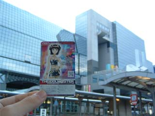
これの出来に関してはかなり微妙ですが orz

はるか．だからどーした．
そしてあとは電車に乗って，米原での乗り換えにだけ気をつけて（乗り換えたあとの電車で座れるように気をつけて）岐阜へ行くだけ．何故かって電車で寝ておかないと本気でヤバイから．


ちなみに京都から乗ってきた電車はこの駅で分離させて，前と後ろで違う目的地へこの後向かうようでした．こんなの徳島じゃ見たことなかったので記念に撮影．
かなーり分かりにくいですが，2枚目の写真の方は連結器が外れています．多分 2, 3cm くらいｗ
さて，予定通りに07:58に岐阜駅に到着．そして名鉄バスセンターを探し，切符を購入．
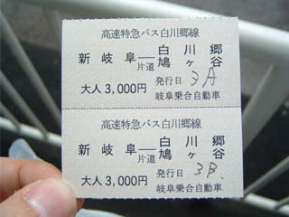
ここからまた3時間以上バスの旅です．サンクスで昼食を買いバスに乗り込みました．そしてここでも爆睡する我々．
ちなみに北陸自動車道を進み続けましたが，インターチェンジ付近ではどこも渋滞していたようです．ずっと寝てたので気付きませんでしたが．
山奥に入り始めた頃に目が覚めた我々．早速ここぞとばかりに写真撮影を始めます．
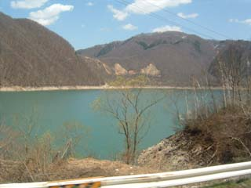
どうやら鬼ヶ淵決死同盟（だっけ？）の抵抗もむなしく，ダムは完成してしまったようです．


このダムが完成したのは昭和30年頃，つまり今からだいたい50年くらい前．写真に石で作った大きな壁がありますが，それがダムです．バスの運転手さんが解説してくれたんですが，石を詰めて，その隙間を粘土（コンクリだっけか）で埋め，そしてまた石を詰めて隙間を埋めて… って感じで作ったそうです．
そんないーかげんな方法で作れたんかい！？と物凄くツッコみたくなります(^^; いやあ人類ってほんと色々信じられないｗ
まぁピラミッドや墳墓をマジで作る生物ですから，今更驚いたことじゃないのかもしれませんがねｗ
結局高速での渋滞が響いたらしく白川郷に到着したのは予定時刻より1時間近く遅れてになりました．まぁこの辺りはGW補正が掛かってるわけだからしょうがない．
そしてそこでついにサモと合流．
何やら木刀を持っていましたｗ どうやら金属バットの代わりだそうでｗ
ちなみに彼は白川郷に至るまでに苦難の数々があったらしいですが，まぁ高山駅のコンビニで野宿（というか徹夜）したらしい，って程度にここでの解説はとどめておくとします．
さて，いよいよ始まりました，恐怖の雛見沢観光編．前日兵庫を歩き回り既に足が棒になっていて，朝も京都駅へと歩いたせいでもうほんとマジで疲労骨折しそうな勢いの足を使っての白川郷散策．頼りになるのはココ（昨夜さんを愛でる場所）の「ひぐらし大判定会」のページからコピーしてきた地図のみ！さて，果たしてこれだけで一体いくつの雛見沢名所を見ることが出来たのか！？
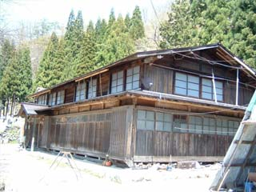
まずは1つ目，北条ハウス．撮る位置もばっちり！しかし何故か裏口からの撮影を忘れた orz

2つ目，リカちゃまハウス．何やら補修工事中ですのことよ(^^;
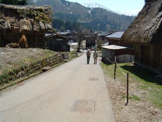
3つ目，通称「嘘だ坂」．これも完璧だ．レナパネルでも作って持っていけばよかったよほんと orz

4つ目，多分園崎家．何気に入場料を取る家だったので，とりあえず外から撮影．あとでまた時間あったら来ようとこっそり思ってましたが，結局再び来ることはなく，ここが園崎家なのかどうか，真偽は定かではありません．まぁほぼ間違いなく確定なんですが(^^;
 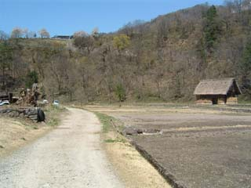
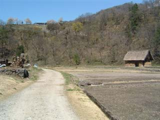
5つ目（？）．なんかゲーム中で見たことあるような無いような，そんなビミョンな風景．園先家への道だと思うんですが…
 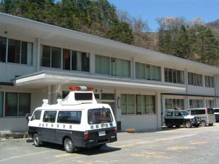
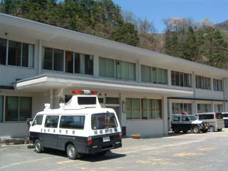
6つ目，入江診療所．なぜか自分はここが郵便局であると勘違いしていました．ほんとに診療所です．「白川診療所」っていう．
ちなみにこの日この村の道路は全て信号を止めて，警官が手信号で交差点の車の流れを制御していました．
事故をなるべく減らせるように，あってもすぐに対処できるように，ってことでしょうね．そんなわけで，この診療所がパトカーの駐車場的存在になっていました．
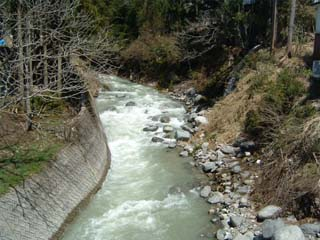
ここからしばらく普通の風景写真．まぁせっかく観光も出来るんだから，舞台レポートだけじゃなくて自然も撮影しておこうと思ってしたわけです．
 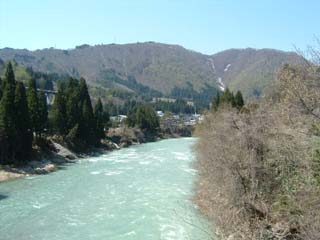
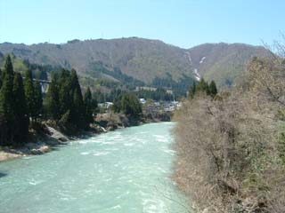
のどかな風景が続きます．
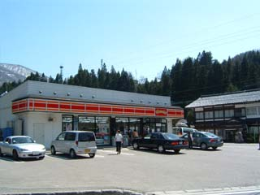 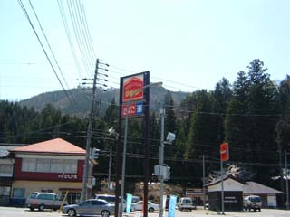
通称「雛見沢コンビニ」ｗ（こう名付けたのはさっきのサイトの人です）

7つ目（？）．先ほどのサイトにあった地図によると，ここが宝物殿のはずなのですが… なんか微妙．地図の見方間違ったのかも．

そしてまだ咲き盛りの桜を見て，徳島県民として驚いたり．東北の人とかだとこれ見ても普通なんだろうけどもね．
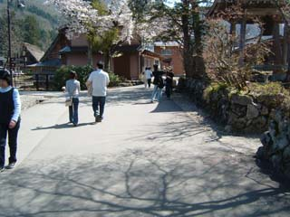
8つ目（？）．レナとの待ち合わせ場所らしき場所．写真撮ってたときは「ここだ！ここで間違いない！」とか思っていたのですが，改めて見直してみるとなんか違うような気が…


9つ目，リカちゃま神社．これは見た瞬間に「間違いねえｗｗ」と確信しました．


賽銭箱付近から見下ろすように撮影．これもゲーム中の背景にあったはず．
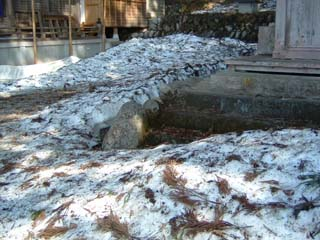
そして境内にはなんとまだ何故か雪が残っていました．徳島だと山間部でも考えられません．さすがは内陸の寒村．
 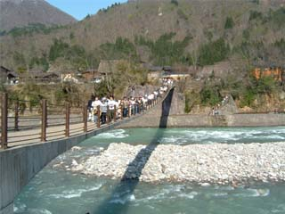
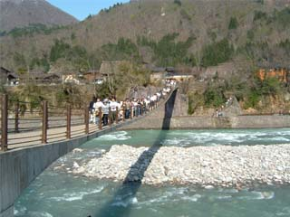
そうこうしていると帰りのバス（名古屋行き）の時間も迫りつつあったので，であい橋を渡りバス乗り場へ帰ってくることに．
てなわけで雛見沢で見つかったスポットは結局9箇所（一部怪しい場所あり）でした．本当はあと前原ハウスと竜宮ハウスも探したかったんですが，前原ハウスは地図に従って行けども行けども見つからないので断念．竜宮ハウスはそれらしき家が多すぎるので断念．そして展望台（神社境内からの眺め）はシャトルバスを使うか長距離を歩くかだったので時間が掛かりすぎると判断し断念．学校とか沙都子つり橋は我々がいた場所からもうちょっと戻った所（車じゃないととても行けない場所）にあったらしいので断念しました．
とは言ってもそれなりにあちこちまわれたと思います．楽しかったです(´∀｀)
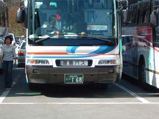
なぜお前がこんな所にいるんだ徳島バスｗｗｗｗ
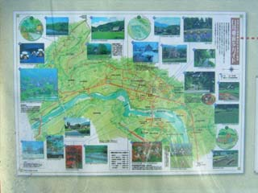
これを元にして帰ったらもっと分かりやすい地図を描こう…と思っていたけど，結局めんどくさくなったのでやってません(^^;
そして16時発の名古屋行き高速バスに乗り名古屋を目指す我々．
ここからはサモも合流しました．なんでももう旅に飽きたとか（エー
一人旅が辛くなったご様子でした．
帰りのバスは山道でのトンネルでバス同士が対向してしまい，片方がバックでトンネルの外まで出る（後ろにいた乗用車もバックでトンネルの外へ逃がして）というアクシデントが発生したり，やはり高速でところどころ渋滞していたりというのもあって21時頃名古屋駅に到着しました．
そして電車で金山駅まで移動し，予約してあったホテルへ泊まりました．幸いシングルも空いていたのでサモもそこで泊まれました．
 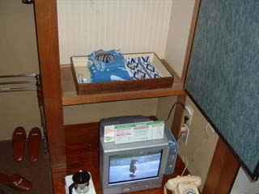
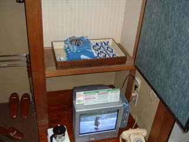
またもや布団にダイビングする ohrin 氏ｗ．もうこの日はほんとに疲れまくったので即刻就寝しました．
フロントのおばちゃんに「他のお客様がいるから，騒がないようにお願いしますね…」と頼まれたときも，「あ，いや，もうそんな元気残ってないです(・ω・)」と答えたくらいにｗ
そうして恐怖の雛見沢観光編は，足に多大なるダメージを残して終了しました．旅はまだまだ続きます．
名古屋別離編，大阪狂闘編へ続く…
（このあとの遠征記をまだ書いてません… 続きが書かれるのはいつになるのやら…）